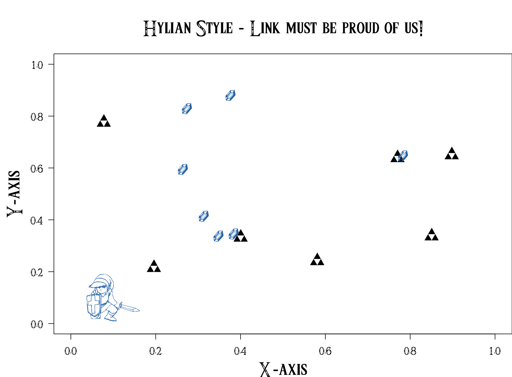

Make your plot Hylian
Kevin Cazelles, David Beauchesne & Nicolas Casajus
April 14, 2017 - last update on June 24, 2017`
Status: 

Here are the 6 steps you need to make your plot a Hylian one! May the triforce be with you!
- R Version
sessionInfo()[[1]]$version.string## [1] "R version 3.4.0 (2017-04-21)"- Open R and download the Triforce font
# Create a directory < fonts >
dir <- "_tmp/dir"
dir.create("_tmp/fonts", showWarnings = FALSE)
# Download Triforce font < Triforce.ttf >
url <- "http://zeldauniverse.net/wp-content/uploads/2014/01/Triforce.ttf_.zip"
download.file(url, paste0("dir", basename(url)))
dir("dir")## [1] "Triforce.ttf"# Unzip the file
untar(paste0("dir", basename(url)), exdir = "dir", compressed = "gzip")
dir("dir")## [1] "Triforce.ttf"# Remove .zip
file.remove(paste0("dir", basename(url)))## [1] TRUEdir("dir")## [1] "Triforce.ttf"- Install the
showtextpackage if not already installed:
install.package("showtext", dependencies = TRUE)
library(showtext)- To see the list of font available locally do so:
showtext.auto()
font.files()## [1] "3270Medium.ttf"
## [2] "3270Narrow.ttf"
## [3] "3270SemiNarrow.ttf"
## [4] "academicons.ttf"
## [5] "Al Nile.ttc"
## [6] "Al Tarikh.ttc"
## [7] "AlBayan.ttc"
## [8] "AmericanTypewriter.ttc"
## [9] "Andale Mono.ttf"
## [10] "Anonymice Powerline Bold Italic.ttf"
## [11] "Anonymice Powerline Bold.ttf"
## [12] "Anonymice Powerline Italic.ttf"
## [13] "Anonymice Powerline.ttf"
## [14] "Apple Chancery.ttf"
## [15] "AppleGothic.ttf"
## [16] "AppleMyungjo.ttf"
## [17] "Arial Black.ttf"
## [18] "Arial Bold Italic.ttf"
## [19] "Arial Bold.ttf"
## [20] "Arial Italic.ttf"
## [21] "Arial Narrow Bold Italic.ttf"
## [22] "Arial Narrow Bold.ttf"
## [23] "Arial Narrow Italic.ttf"
## [24] "Arial Narrow.ttf"
## [25] "Arial Rounded Bold.ttf"
## [26] "Arial Unicode.ttf"
## [27] "Arial.ttf"
## [28] "Arimo Bold for Powerline.ttf"
## [29] "Arimo Bold Italic for Powerline.ttf"
## [30] "Arimo for Powerline.ttf"
## [31] "Arimo Italic for Powerline.ttf"
## [32] "Athelas.ttc"
## [33] "Ayuthaya.ttf"
## [34] "Baghdad.ttc"
## [35] "Bangla MN.ttc"
## [36] "Bangla Sangam MN.ttc"
## [37] "Baskerville.ttc"
## [38] "Beirut.ttc"
## [39] "BigCaslon.ttf"
## [40] "Bodoni 72 OS.ttc"
## [41] "Bodoni 72 Smallcaps Book.ttf"
## [42] "Bodoni 72.ttc"
## [43] "Bodoni Ornaments.ttf"
## [44] "Bradley Hand Bold.ttf"
## [45] "Brush Script.ttf"
## [46] "cc-icons.ttf"
## [47] "Chalkboard.ttc"
## [48] "ChalkboardSE.ttc"
## [49] "Chalkduster.ttf"
## [50] "Charter.ttc"
## [51] "Cochin.ttc"
## [52] "Comic Sans MS Bold.ttf"
## [53] "Comic Sans MS.ttf"
## [54] "Copperplate.ttc"
## [55] "Corsiva.ttc"
## [56] "Courier New Bold Italic.ttf"
## [57] "Courier New Bold.ttf"
## [58] "Courier New Italic.ttf"
## [59] "Courier New.ttf"
## [60] "Cousine Bold for Powerline.ttf"
## [61] "Cousine Bold Italic for Powerline.ttf"
## [62] "Cousine for Powerline.ttf"
## [63] "Cousine Italic for Powerline.ttf"
## [64] "D2Coding Bold for Powerline.ttf"
## [65] "D2Coding for Powerline.ttf"
## [66] "Damascus.ttc"
## [67] "DecoTypeNaskh.ttc"
## [68] "DejaVu Sans Mono Bold for Powerline.ttf"
## [69] "DejaVu Sans Mono Bold Oblique for Powerline.ttf"
## [70] "DejaVu Sans Mono for Powerline.ttf"
## [71] "DejaVu Sans Mono Oblique for Powerline.ttf"
## [72] "Devanagari Sangam MN.ttc"
## [73] "DevanagariMT.ttc"
## [74] "Didot.ttc"
## [75] "DIN Alternate Bold.ttf"
## [76] "DIN Condensed Bold.ttf"
## [77] "Diwan Kufi.ttc"
## [78] "Diwan Thuluth.ttf"
## [79] "Droid Sans Mono Dotted for Powerline.ttf"
## [80] "Droid Sans Mono for Powerline.otf"
## [81] "Droid Sans Mono Slashed for Powerline.ttf"
## [82] "EuphemiaCAS.ttc"
## [83] "Farah.ttc"
## [84] "Farisi.ttf"
## [85] "FontAwesome.otf"
## [86] "For R.ttf"
## [87] "FuraMono-Bold Powerline.otf"
## [88] "FuraMono-Medium Powerline.otf"
## [89] "FuraMono-Regular Powerline.otf"
## [90] "Futura.ttc"
## [91] "Georgia Bold Italic.ttf"
## [92] "Georgia Bold.ttf"
## [93] "Georgia Italic.ttf"
## [94] "Georgia.ttf"
## [95] "GillSans.ttc"
## [96] "Go Mono Bold for Powerline.ttf"
## [97] "Go Mono Bold Italic for Powerline.ttf"
## [98] "Go Mono for Powerline.ttf"
## [99] "Go Mono Italic for Powerline.ttf"
## [100] "graphicsutils.ttf"
## [101] "Gujarati Sangam MN.ttc"
## [102] "GujaratiMT.ttc"
## [103] "Gurmukhi MN.ttc"
## [104] "Gurmukhi Sangam MN.ttc"
## [105] "Gurmukhi.ttf"
## [106] "Hack-Bold.ttf"
## [107] "Hack-BoldItalic.ttf"
## [108] "Hack-Italic.ttf"
## [109] "Hack-Regular.ttf"
## [110] "Herculanum.ttf"
## [111] "Hoefler Text Ornaments.ttf"
## [112] "Hoefler Text.ttc"
## [113] "HylianSymbols.ttf"
## [114] "Impact.ttf"
## [115] "InaiMathi.ttf"
## [116] "Inconsolata Bold for Powerline.ttf"
## [117] "Inconsolata for Powerline.otf"
## [118] "Inconsolata-dz for Powerline.otf"
## [119] "Inconsolata-g for Powerline.otf"
## [120] "ionicons.ttf"
## [121] "Iowan Old Style.ttc"
## [122] "ITFDevanagari.ttc"
## [123] "Kailasa.ttc"
## [124] "Kannada MN.ttc"
## [125] "Kannada Sangam MN.ttc"
## [126] "Kefa.ttc"
## [127] "Khmer MN.ttc"
## [128] "Khmer Sangam MN.ttf"
## [129] "Kokonor.ttf"
## [130] "Krungthep.ttf"
## [131] "KufiStandardGK.ttc"
## [132] "Lao MN.ttc"
## [133] "Lao Sangam MN.ttf"
## [134] "Literation Mono Powerline Bold Italic.ttf"
## [135] "Literation Mono Powerline Bold.ttf"
## [136] "Literation Mono Powerline Italic.ttf"
## [137] "Literation Mono Powerline.ttf"
## [138] "Luminari.ttf"
## [139] "Malayalam MN.ttc"
## [140] "Malayalam Sangam MN.ttc"
## [141] "Marion.ttc"
## [142] "Meslo LG L Bold for Powerline.ttf"
## [143] "Meslo LG L Bold Italic for Powerline.ttf"
## [144] "Meslo LG L DZ Bold for Powerline.ttf"
## [145] "Meslo LG L DZ Bold Italic for Powerline.ttf"
## [146] "Meslo LG L DZ Italic for Powerline.ttf"
## [147] "Meslo LG L DZ Regular for Powerline.ttf"
## [148] "Meslo LG L Italic for Powerline.ttf"
## [149] "Meslo LG L Regular for Powerline.ttf"
## [150] "Meslo LG M Bold for Powerline.ttf"
## [151] "Meslo LG M Bold Italic for Powerline.ttf"
## [152] "Meslo LG M DZ Bold for Powerline.ttf"
## [153] "Meslo LG M DZ Bold Italic for Powerline.ttf"
## [154] "Meslo LG M DZ Italic for Powerline.ttf"
## [155] "Meslo LG M DZ Regular for Powerline.ttf"
## [156] "Meslo LG M Italic for Powerline.ttf"
## [157] "Meslo LG M Regular for Powerline.ttf"
## [158] "Meslo LG S Bold for Powerline.ttf"
## [159] "Meslo LG S Bold Italic for Powerline.ttf"
## [160] "Meslo LG S DZ Bold for Powerline.ttf"
## [161] "Meslo LG S DZ Bold Italic for Powerline.ttf"
## [162] "Meslo LG S DZ Italic for Powerline.ttf"
## [163] "Meslo LG S DZ Regular for Powerline.ttf"
## [164] "Meslo LG S Italic for Powerline.ttf"
## [165] "Meslo LG S Regular for Powerline.ttf"
## [166] "Microsoft Sans Serif.ttf"
## [167] "Mishafi Gold.ttf"
## [168] "Mishafi.ttf"
## [169] "Monofur Bold for Powerline.ttf"
## [170] "Monofur for Powerline.ttf"
## [171] "Monofur Italic for Powerline.ttf"
## [172] "Mshtakan.ttc"
## [173] "Muna.ttc"
## [174] "Myanmar MN.ttc"
## [175] "Myanmar Sangam MN.ttc"
## [176] "Nadeem.ttc"
## [177] "NewPeninimMT.ttc"
## [178] "NISC18030.ttf"
## [179] "Noto Mono for Powerline.ttf"
## [180] "Oriya MN.ttc"
## [181] "Oriya Sangam MN.ttc"
## [182] "Papyrus.ttc"
## [183] "Phosphate.ttc"
## [184] "PlantagenetCherokee.ttf"
## [185] "PTMono.ttc"
## [186] "PTSans.ttc"
## [187] "PTSerif.ttc"
## [188] "PTSerifCaption.ttc"
## [189] "Raanana.ttc"
## [190] "Roboto Mono Bold for Powerline.ttf"
## [191] "Roboto Mono Bold Italic for Powerline.ttf"
## [192] "Roboto Mono for Powerline.ttf"
## [193] "Roboto Mono Italic for Powerline.ttf"
## [194] "Roboto Mono Light for Powerline.ttf"
## [195] "Roboto Mono Light Italic for Powerline.ttf"
## [196] "Roboto Mono Medium for Powerline.ttf"
## [197] "Roboto Mono Medium Italic for Powerline.ttf"
## [198] "Roboto Mono Thin for Powerline.ttf"
## [199] "Roboto Mono Thin Italic for Powerline.ttf"
## [200] "Sana.ttc"
## [201] "Sathu.ttf"
## [202] "Sauce Code Powerline Black.otf"
## [203] "Sauce Code Powerline Bold.otf"
## [204] "Sauce Code Powerline ExtraLight.otf"
## [205] "Sauce Code Powerline Light.otf"
## [206] "Sauce Code Powerline Medium.otf"
## [207] "Sauce Code Powerline Regular.otf"
## [208] "Sauce Code Powerline Semibold.otf"
## [209] "Savoye LET.ttc"
## [210] "Seravek.ttc"
## [211] "Shree714.ttc"
## [212] "SignPainter.ttc"
## [213] "Silom.ttf"
## [214] "Sinhala MN.ttc"
## [215] "Sinhala Sangam MN.ttc"
## [216] "Skia.ttf"
## [217] "SnellRoundhand.ttc"
## [218] "Songti.ttc"
## [219] "STIXGeneral.otf"
## [220] "STIXGeneralBol.otf"
## [221] "STIXGeneralBolIta.otf"
## [222] "STIXGeneralItalic.otf"
## [223] "STIXIntDBol.otf"
## [224] "STIXIntDReg.otf"
## [225] "STIXIntSmBol.otf"
## [226] "STIXIntSmReg.otf"
## [227] "STIXIntUpBol.otf"
## [228] "STIXIntUpDBol.otf"
## [229] "STIXIntUpDReg.otf"
## [230] "STIXIntUpReg.otf"
## [231] "STIXIntUpSmBol.otf"
## [232] "STIXIntUpSmReg.otf"
## [233] "STIXNonUni.otf"
## [234] "STIXNonUniBol.otf"
## [235] "STIXNonUniBolIta.otf"
## [236] "STIXNonUniIta.otf"
## [237] "STIXSizFiveSymReg.otf"
## [238] "STIXSizFourSymBol.otf"
## [239] "STIXSizFourSymReg.otf"
## [240] "STIXSizOneSymBol.otf"
## [241] "STIXSizOneSymReg.otf"
## [242] "STIXSizThreeSymBol.otf"
## [243] "STIXSizThreeSymReg.otf"
## [244] "STIXSizTwoSymBol.otf"
## [245] "STIXSizTwoSymReg.otf"
## [246] "STIXVar.otf"
## [247] "STIXVarBol.otf"
## [248] "SukhumvitSet.ttc"
## [249] "SuperClarendon.ttc"
## [250] "Symbol Neu for Powerline.ttf"
## [251] "Tahoma Bold.ttf"
## [252] "Tahoma.ttf"
## [253] "Tamil MN.ttc"
## [254] "Tamil Sangam MN.ttc"
## [255] "Telugu MN.ttc"
## [256] "Telugu Sangam MN.ttc"
## [257] "Times New Roman Bold Italic.ttf"
## [258] "Times New Roman Bold.ttf"
## [259] "Times New Roman Italic.ttf"
## [260] "Times New Roman.ttf"
## [261] "Tinos Bold for Powerline.ttf"
## [262] "Tinos Bold Italic for Powerline.ttf"
## [263] "Tinos for Powerline.ttf"
## [264] "Tinos Italic for Powerline.ttf"
## [265] "Trattatello.ttf"
## [266] "Trebuchet MS Bold Italic.ttf"
## [267] "Trebuchet MS Bold.ttf"
## [268] "Trebuchet MS Italic.ttf"
## [269] "Trebuchet MS.ttf"
## [270] "Triforce.ttf"
## [271] "Ubuntu Mono derivative Powerline Bold Italic.ttf"
## [272] "Ubuntu Mono derivative Powerline Bold.ttf"
## [273] "Ubuntu Mono derivative Powerline Italic.ttf"
## [274] "Ubuntu Mono derivative Powerline.ttf"
## [275] "ubuntu-mono-590dccc17c4bd.otf"
## [276] "Verdana Bold Italic.ttf"
## [277] "Verdana Bold.ttf"
## [278] "Verdana Italic.ttf"
## [279] "Verdana.ttf"
## [280] "Waseem.ttc"
## [281] "Webdings.ttf"
## [282] "Wingdings 2.ttf"
## [283] "Wingdings 3.ttf"
## [284] "Wingdings.ttf"
## [285] "Zapfino.ttf"
## [286] "ヒラギノ丸ゴ ProN W4.ttc"- Add the new directory < fonts > to the available font paths of showtext
font.paths("dir")## [1] "/Users/KevCaz/Codes/Github/Sites/letiR_website/dir"
## [2] "/Library/Fonts"
## [3] "/Users/KevCaz/Library/Fonts"# Is the TTF present?
font.files()[grep("Triforce", font.files())]## [1] "Triforce.ttf" "Triforce.ttf"- Add the Triforce font to your session:
font.add(family = 'Triforce', regular = 'Triforce.ttf')
font.families()## [1] "sans" "serif" "mono" "wqy-microhei"
## [5] "Academicons" "FontAwesome" "Ionicons" "Triforce"- Here it goes:
par(family = "Triforce", las = 1, cex.lab = 2, cex.main = 2, mar = c(4, 5, 5, 0))
plot(x = c(0, 1), y = c(0, 1), type = "n", xlab = "X-axis", ylab = "Y-axis")
title(main = "Hylian Style - Link must be proud of us!")
points(x = runif(7), y = runif(7), pch = "*", cex = 2)
points(x = runif(7), y = runif(7), pch = "$", cex = 2, col = "#347AB7")
points(x = 0.1, y = 0.1, pch = "%", cex = 6, col = "#347AB7")
LS0tCnRpdGxlOiAiTWFrZSB5b3VyIHBsb3QgSHlsaWFuIgphdXRob3I6CiAgLSBLZXZpbiBDYXplbGxlcywKICAgIERhdmlkIEJlYXVjaGVzbmUgJgogICAgTmljb2xhcyBDYXNhanVzCnN0YXR1czogZmluYWxWZXJzaW9uCnBnbWxhbmc6IFIoPj0zLjAuMCkKZGF0ZTogIkFwcmlsIDE0LCAyMDE3ICAtICBsYXN0IHVwZGF0ZSBvbiBKdW5lIDI0LCAyMDE3YCIKb3V0cHV0OgogIGh0bWxfZG9jdW1lbnQ6CiAgICBjb2RlX2Rvd25sb2FkOiBUUlVFCiAgICBpbmNsdWRlOgogICAgICAgIGFmdGVyX2JvZHk6IFtmb290ZXIuaHRtbCwgZGlzcXVzLmh0bWxdCi0tLQoKCmBgYHtyIGFkZFN0YXR1cywgZWNobz1GQUxTRSwgcmVzdWx0cz0iYXNpcyIsIG1lc3NhZ2U9RkFMU0V9CiAgc291cmNlKCJSc2NyaXB0cy9yZWFkWWFtbC5SIikKICByZWFkWUFNTCgiSHlsaWFuU3R5bGUuUm1kIikKYGBgCgo8YnIvPgo8YnIvPgoKSGVyZSBhcmUgdGhlIDYgc3RlcHMgeW91IG5lZWQgdG8gbWFrZSB5b3VyIHBsb3QgYSBIeWxpYW4gb25lIQoqKk1heSB0aGUgdHJpZm9yY2UgYmUgd2l0aCB5b3UqKiEKCgowLiBSIFZlcnNpb24KCmBgYHtyLCBlY2hvID0gVFJVRSwgZXZhbCA9IFRSVUV9CnNlc3Npb25JbmZvKClbWzFdXSR2ZXJzaW9uLnN0cmluZwpgYGAKCjEuIE9wZW4gUiBhbmQgZG93bmxvYWQgdGhlIFsqVHJpZm9yY2UqIGZvbnRdKGh0dHBzOi8vemVsZGF1bml2ZXJzZS5uZXQvbWVkaWEvZGlyKQoKYGBge3IsIGVjaG8gPSBUUlVFLCBldmFsID0gVFJVRX0KIyBDcmVhdGUgYSBkaXJlY3RvcnkgPCBmb250cyA+CmRpciA8LSAiX3RtcC9kaXIiCmRpci5jcmVhdGUoIl90bXAvZm9udHMiLCBzaG93V2FybmluZ3MgPSBGQUxTRSkKCiMgRG93bmxvYWQgVHJpZm9yY2UgZm9udCA8IFRyaWZvcmNlLnR0ZiA+CnVybCA8LSAiaHR0cDovL3plbGRhdW5pdmVyc2UubmV0L3dwLWNvbnRlbnQvdXBsb2Fkcy8yMDE0LzAxL1RyaWZvcmNlLnR0Zl8uemlwIgpkb3dubG9hZC5maWxlKHVybCwgcGFzdGUwKCJkaXIiLCBiYXNlbmFtZSh1cmwpKSkKZGlyKCJkaXIiKQoKIyBVbnppcCB0aGUgZmlsZQp1bnRhcihwYXN0ZTAoImRpciIsIGJhc2VuYW1lKHVybCkpLCBleGRpciA9ICJkaXIiLCBjb21wcmVzc2VkID0gImd6aXAiKQpkaXIoImRpciIpCgojIFJlbW92ZSAuemlwCmZpbGUucmVtb3ZlKHBhc3RlMCgiZGlyIiwgYmFzZW5hbWUodXJsKSkpCmRpcigiZGlyIikKYGBgCgoKMi4gSW5zdGFsbCB0aGUgYHNob3d0ZXh0YCBwYWNrYWdlIGlmIG5vdCBhbHJlYWR5IGluc3RhbGxlZDoKCmBgYHtyLCBlY2hvID0gVFJVRSwgZXZhbCA9IEZBTFNFfQppbnN0YWxsLnBhY2thZ2UoInNob3d0ZXh0IiwgZGVwZW5kZW5jaWVzID0gVFJVRSkKbGlicmFyeShzaG93dGV4dCkKYGBgCgpgYGB7ciwgZWNobyA9IEZBTFNFLCBldmFsID0gVFJVRX0KbGlicmFyeShzaG93dGV4dCkKYGBgCgozLiBUbyBzZWUgdGhlIGxpc3Qgb2YgZm9udCBhdmFpbGFibGUgbG9jYWxseSBkbyBzbzoKCmBgYHtyLCBlY2hvID0gVFJVRSwgZXZhbCA9IFRSVUV9CnNob3d0ZXh0LmF1dG8oKQpmb250LmZpbGVzKCkKYGBgCgo0LiBBZGQgdGhlIG5ldyBkaXJlY3RvcnkgPCBmb250cyA+IHRvIHRoZSBhdmFpbGFibGUgZm9udCBwYXRocyBvZiBzaG93dGV4dAoKYGBge3IsIGVjaG8gPSBUUlVFLCBldmFsID0gRkFMU0V9CmZvbnQucGF0aHMoImRpciIpCmBgYAoKYGBge3IsIGVjaG8gPSBGQUxTRSwgZXZhbCA9IFRSVUV9CmdzdWIoIi9Vc2Vycy9uaWNvbGFzY2FzYWp1cy8iLCAifi8iLCBmb250LnBhdGhzKCJkaXIiKSkKYGBgCgpgYGB7ciwgZWNobyA9IFRSVUUsIGV2YWwgPSBUUlVFfQojIElzIHRoZSBUVEYgcHJlc2VudD8KZm9udC5maWxlcygpW2dyZXAoIlRyaWZvcmNlIiwgZm9udC5maWxlcygpKV0KYGBgCgo1LiBBZGQgdGhlICpUcmlmb3JjZSogZm9udCB0byB5b3VyIHNlc3Npb246CgpgYGB7ciwgZWNobyA9IFRSVUUsIGV2YWwgPSBUUlVFfQpmb250LmFkZChmYW1pbHkgPSAnVHJpZm9yY2UnLCByZWd1bGFyID0gJ1RyaWZvcmNlLnR0ZicpCmZvbnQuZmFtaWxpZXMoKQpgYGAKCjYuIEhlcmUgaXQgZ29lczoKCmBgYHtyLCBlY2hvID0gVFJVRSwgZXZhbCA9IFRSVUUsIGZpZy53aWR0aCA9IDkuNSwgZmlnLmhlaWdodCA9IDcsIGZpZy5zaG93dGV4dCA9IFRSVUV9CnBhcihmYW1pbHkgPSAiVHJpZm9yY2UiLCBsYXMgPSAxLCBjZXgubGFiID0gMiwgY2V4Lm1haW4gPSAyLCBtYXIgPSBjKDQsIDUsIDUsIDApKQpwbG90KHggPSBjKDAsIDEpLCB5ID0gYygwLCAxKSwgdHlwZSA9ICJuIiwgeGxhYiA9ICJYLWF4aXMiLCB5bGFiID0gIlktYXhpcyIpCnRpdGxlKG1haW4gPSAiSHlsaWFuIFN0eWxlIC0gTGluayBtdXN0IGJlIHByb3VkIG9mIHVzISIpCnBvaW50cyh4ID0gcnVuaWYoNyksIHkgPSBydW5pZig3KSwgcGNoID0gIioiLCBjZXggPSAyKQpwb2ludHMoeCA9IHJ1bmlmKDcpLCB5ID0gcnVuaWYoNyksIHBjaCA9ICIkIiwgY2V4ID0gMiwgY29sID0gIiMzNDdBQjciKQpwb2ludHMoeCA9IDAuMSwgeSA9IDAuMSwgcGNoID0gIiUiLCBjZXggPSA2LCBjb2wgPSAiIzM0N0FCNyIpCmBgYAo=
comments powered by Disqus